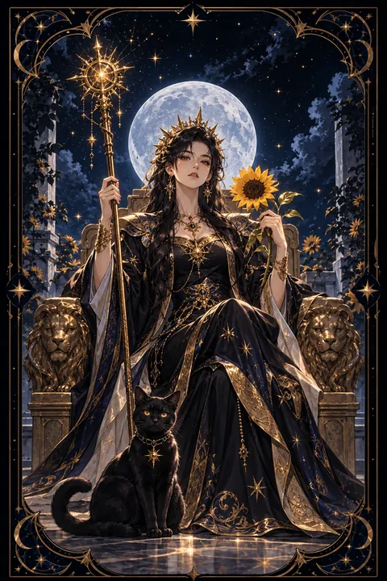

완드 여왕 카드 — 빛나는 자신감과 따뜻한 카리스마
완드 여왕 카드 한눈에 보기
완드 여왕 카드 상징 읽기

동네보살의 카드 그림은 전통 라이더–웨이트 덱의 뜻을 새 그림으로 옮긴 것입니다. 아래 상징 설명은 전통 덱의 그림을 기준으로 합니다.
완드 여왕은 사자 조각이 새겨진 왕좌에 당당하게 앉아 오른손에는 지팡이를, 왼손에는 해바라기를 들고 있습니다. 사자는 불의 원소와 용기, 그리고 흔들리지 않는 자존감을 상징합니다.
해바라기는 늘 해를 향해 고개를 드는 꽃입니다. 밝음과 기쁨, 생명력, 그리고 사람들에게 온기를 나누는 여왕의 성품을 나타냅니다. 왕좌 뒤편의 휘장에도 사자와 해바라기가 반복되어 그녀의 세계가 따뜻한 빛으로 가득하다는 것을 보여 줍니다.
발치에 앉은 검은 고양이는 이 카드에서 가장 눈에 띄는 상징입니다. 직관과 독립심, 그리고 겉으로 드러나지 않는 신비로운 힘을 뜻합니다. 여왕이 밝은 면만이 아니라 자신만의 그림자와 직감까지 받아들인 존재라는 의미입니다. 다리를 벌리고 앉은 자세는 거리낌 없는 자신감과 열린 마음을 드러냅니다.
완드 여왕 카드 정방향 뜻
정방향 완드 여왕은 자신감과 따뜻함을 함께 지닌 사람의 에너지를 보여 줍니다. 스스로를 믿는 태도가 자연스러운 매력으로 드러나고 주변 사람들이 그 밝은 기운에 이끌려 모여드는 시기입니다.
이 카드는 여러 역할을 동시에 해내는 능력도 뜻합니다. 일과 가정, 인간관계를 두루 챙기면서도 중심을 잃지 않는 힘이 있습니다. 발표나 모임처럼 사람들 앞에 서는 자리에서 특히 빛을 발합니다.
검은 고양이가 상징하듯 직감이 예리해지는 때이기도 합니다. 설명하기 어려운 느낌이 든다면 그 신호를 무시하지 말고 참고해 보세요. 자신의 재능을 숨기지 말고 당당하게 드러낼수록 기회가 늘어납니다. 따뜻함과 단호함을 함께 갖추면 이 카드의 힘을 온전히 쓸 수 있습니다. 먼저 웃으며 인사를 건네는 작은 행동이 새로운 인연과 기회를 불러옵니다.
완드 여왕 카드 역방향 뜻
역방향 완드 여왕은 늘 환하던 자신감에 그늘이 드리운 모습입니다. 남과 자신을 비교하며 위축되거나 인정받지 못한다는 서운함이 날카로운 말투로 드러날 수 있습니다.
질투와 소유욕이 커져 가까운 사람을 몰아세우거나 모든 일을 자기 방식대로 통제하려 들 수 있습니다. 여러 역할을 혼자 떠안은 채 쉬지 못해 지친 것이 원인인 경우도 많습니다.
이 카드는 다른 사람을 챙기기 전에 자신부터 돌보라는 신호입니다. 좋아하는 일을 하며 혼자만의 시간을 갖고 스스로 잘해 온 일을 떠올려 보세요. 남의 빛을 부러워하는 대신 자신의 빛을 다시 키우는 데 에너지를 쓰면 흔들리던 자신감이 제자리를 찾습니다. 잠시 물러나 불씨를 쉬게 하는 것도 여왕다운 선택입니다. 자신에게 너그러워질수록 다른 사람에게도 다시 따뜻해질 수 있습니다.
연애에서 완드 여왕 카드
솔로라면 당당하고 밝은 태도가 무엇보다 큰 매력이 되는 시기입니다. 모임이나 새로운 자리에서 자연스럽게 주목받기 쉽고 호감을 표현하는 사람도 늘어납니다. 눈길이 가는 사람이 있다면 먼저 환하게 웃으며 인사를 건네 보세요.
함께하는 연인이 있다면 관계를 따뜻하게 이끄는 힘이 당신에게 있습니다. 상대를 응원하고 챙겨 주는 태도가 신뢰를 깊게 만듭니다. 다만 사랑을 주는 만큼 자신의 욕구도 솔직하게 표현해야 균형이 맞습니다.
검은 고양이의 상징처럼 자신만의 영역과 독립성을 지키는 것도 중요합니다. 연인에게 모든 것을 맞추기보다 각자의 시간을 존중할 때 관계가 더 건강해집니다. 질투가 올라올 때는 상대를 다그치기보다 불안한 마음을 솔직히 나누는 편이 좋습니다. 스스로를 아끼는 모습이 상대의 마음도 더 깊이 끌어당깁니다.
재회·속마음 질문에서 완드 여왕 카드
재회 가능성을 묻는 자리에서 완드 여왕은 당신의 매력과 자신감이 관계를 다시 움직이는 열쇠라는 점을 알려 줍니다. 헤어진 뒤 스스로를 아끼며 밝게 지내는 모습은 상대에게 자연스럽게 전해집니다. 매달리기보다 당당하고 여유 있는 태도로 연락을 이어 가면 상대도 편하게 마음을 열 수 있습니다. 여왕이 거꾸로 앉아 있다면 질투나 자존심 싸움이 다시 불거질 수 있으니 지난 잘잘못을 따지기보다 자신의 마음부터 돌보는 시간이 먼저 필요합니다. 상대의 소식을 캐묻거나 반응을 떠보기보다 자신의 하루를 충실하게 채우는 데 집중해 보세요. 빛나는 사람에게 사람은 자연히 다시 다가옵니다. 연락을 한다면 짧고 밝은 안부 한마디로 충분합니다.
일·금전에서 완드 여왕 카드
일에서는 리더십과 소통 능력이 돋보이는 시기입니다. 팀을 이끌거나 발표, 협상, 영업처럼 사람을 만나는 업무에서 좋은 성과를 거두기 쉽습니다. 자신의 의견을 분명하게 밝히면 신뢰와 기회가 함께 따라옵니다.
재물 쪽으로는 자신의 재능과 인맥을 활용한 수입이 늘어날 수 있습니다. 실력에 맞는 대가를 당당하게 요구해도 좋습니다. 다만 체면 때문에 지출이 커지기 쉬우니 남에게 보이기 위한 소비는 줄이는 편이 좋습니다. 모든 일을 직접 챙기려 하기보다 믿을 만한 동료에게 역할을 나눠 맡기면 여유가 생깁니다. 사람을 잇는 능력이 곧 기회를 부르는 힘이 되는 시기입니다. 새로운 인맥을 넓히는 자리에도 적극적으로 얼굴을 비쳐 보세요.
완드 여왕 카드는 예일까 아니오일까
자신감과 매력이 한껏 차오른 카드여서 당당하게 나서면 원하는 것을 얻는다고 보아 예로 답합니다. 거꾸로 놓였다면 스스로를 의심하거나 지친 상태이므로 자신을 먼저 돌본 뒤 움직이는 조건이 붙습니다.
자주 묻는 질문
완드 여왕 카드 역방향은 나쁜 뜻인가요?
역방향 완드 여왕은 늘 환하던 자신감에 그늘이 드리운 모습입니다. 남과 자신을 비교하며 위축되거나 인정받지 못한다는 서운함이 날카로운 말투로 드러날 수 있습니다.
완드 여왕 카드가 연애 질문에 나오면요?
솔로라면 당당하고 밝은 태도가 무엇보다 큰 매력이 되는 시기입니다. 모임이나 새로운 자리에서 자연스럽게 주목받기 쉽고 호감을 표현하는 사람도 늘어납니다. 눈길이 가는 사람이 있다면 먼저 환하게 웃으며 인사를 건네 보세요.
타로 카드는 어떻게 뽑나요?
타로 카드 페이지에서 78장을 섞으면 그중 22장이 펼쳐집니다. 마음이 가는 세 장을 고르면 과거·현재·미래 자리에 놓이고, 한 장씩 뒤집어 자리와 방향에 맞는 풀이를 읽습니다. 정방향과 역방향은 섞는 순간 정해집니다.